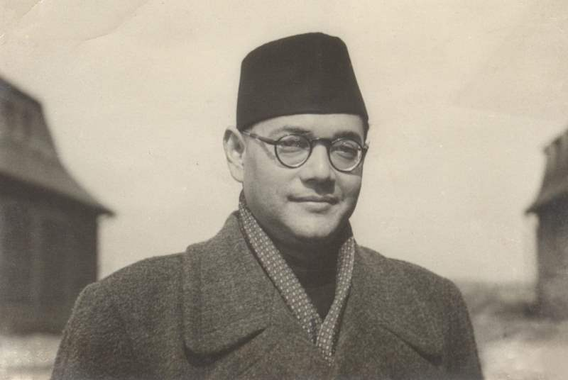

Subhas Chandra Bose (Netaji)
"The leader who redefined Indian nationalism and fought for a free nation."

Timeline of an Extraordinary Life.
- 1897 : Born in Cuttack, Odisha, into a prominent family.
- 1921 : Resigned from the elite Indian Civil Service (ICS) to join the freedom movement.
- 1938: Elected as the President of the Indian National Congress.
- 1941: Escaped house arrest in Calcutta to seek international support for India's freedom.
- 1943 : Took command of the Azad Hind Fauj (Indian National Army) and gave the immortal slogan, "Jai Hind!"
- 1945 : Passed away under mysterious circumstances, leaving behind an immortal legacy.
💡 His Lasting Impact
Netaji's actions forced the British to realize that the Indian military could no longer be controlled, accelerating the timeline for the British departure in 1947.
Important Facts
His Famous Quotes
- Tum mujhe khoon do, main tumhe azaadi doonga!
- Freedom is not given, it is taken."
- "One individual may die for an idea, but that idea will, after his death, incarnate itself in a thousand lives."